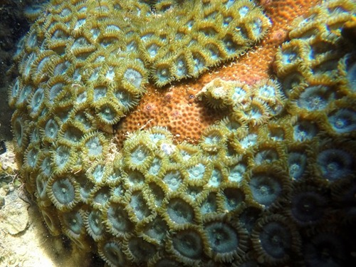
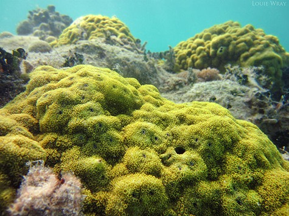

El Salvador posee dos grandes extensiones de arrecifes rocosos, una ubicada en el oriente del país, Punta Amapala; y otra, al
occidente, Los Cóbanos. Ambos presentan variados ambientes, como comunidades de esponjas, octocorales y macroalgas; pero también
cada uno presenta su peculiaridad.
En Los Cóbanos existe una franja paralela a la playa, hasta 13 m de profundidad, con presencia de comunidades coralinas de Porites
lobata, especie que no se reporta para otro arrecife en el país. Mientras en Punta Amapala podemos observar pequeños parches de zoanthidos, formando alfombras en el sustrato a poca profundidad.
Nombre científico: Zoanthus y Porites lobata.
Habitad: Arrecifes de coral en aguas tropicales y subtropicales.
Especie: Coral.
Origen: Océanos Índico y Pacífico.
Descripción: Varios corales, moluscos perdieron la batalla frente a la depredación, destrucción del hábitat y los efectos del cambio climático en la costa salvadoreña.
